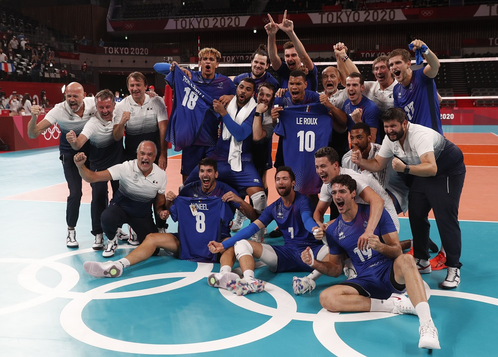
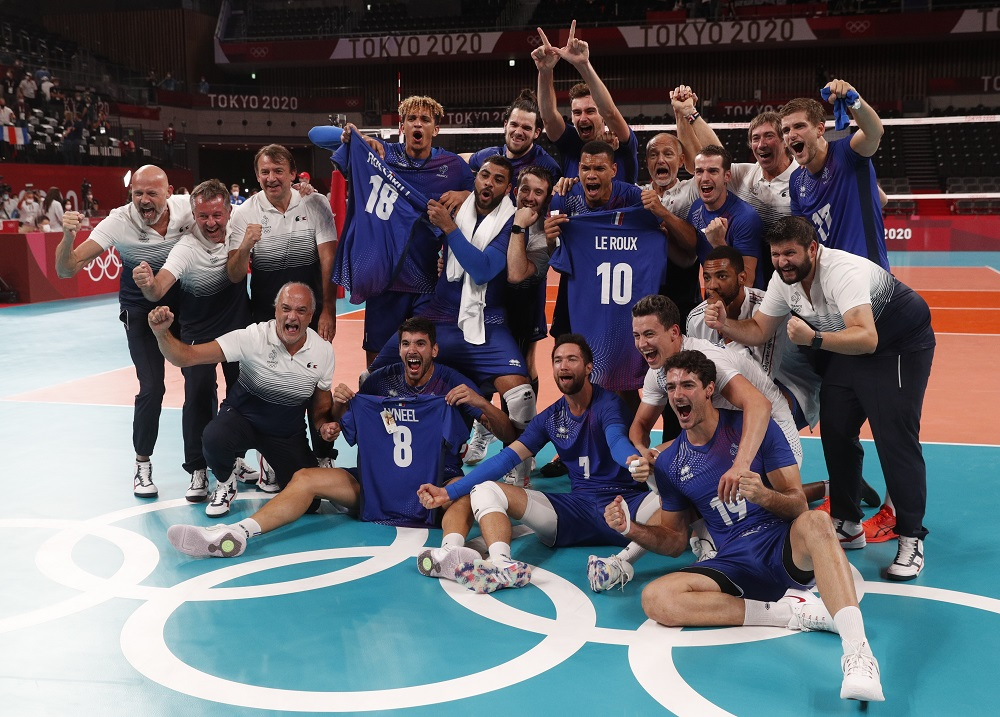

No Vôlei Olímpico Masculino, o atual medalhista de ouro é a França, que surpreendeu a todos na última edição dos Jogos Olímpicos. O Brasil, os Estados Unidos e a antiga União Soviética
destacam-se como as seleções com mais títulos olímpicos, cada uma com um histórico de conquistas notável. Especificamente, o Brasil e a União Soviética acumulam 3 medalhas de ouro cada, enquanto a Itália é uma das maiores medalhistas, com 3 pratas e 3 bronzes. O Brasil também possui 3 pratas, consolidando sua posição de destaque na história do vôlei olímpico.
O atual campeão, a França, pode novamente surpreender e conquistar outro ouro, mas seleções como Brasil, Japão e Estados Unidos certamente proporcionarão uma competição acirrada. Estas equipes têm tradição e talento suficientes para desafiar qualquer adversário.
No Vôlei Olímpico Feminino, os Estados Unidos são os atuais medalhistas de ouro, reafirmando sua posição como uma das potências do esporte. Além deles, Brasil e Japão sempre são fortes candidatos, demonstrando consistência e habilidade em competições internacionais.
Há um seleto grupo de quatro nações que possuem seis medalhas cada: União Soviética, China, Japão e Estados Unidos, mostrando a diversidade e a alta competitividade do vôlei feminino. O Brasil, com um histórico impressionante, segue logo atrás com 5 medalhas, incluindo duas de ouro, destacando-se como uma força constante e ameaçadora no cenário global do vôlei.